感知器
描述
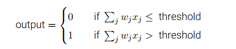▲ 测试
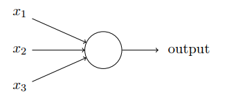
权重实际上就是一种权衡。
感知器的数学描述通过以下两步简化。
- $w\cdot x=\sum_jw_jx_j$
- 把阈值移到不等式的另一边，用感知器的偏置$b=-threshold$代替。
此时感知器的规则可以重写为
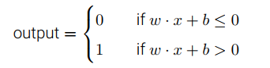
应用举例
感知器可以用来计算简单的逻辑功能：通过构建与非门，而在多个与非门之上能构建出任何运算。
例如，以下电路把$x_1$和$x_2$相加
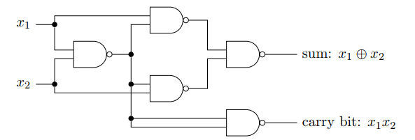
当输入为1,1时，carry bit为1，结果是$(10)_2$也就是十进制的2。
从图中我们看到最左边的感知器的输出被两次作为底部感知器（carry bit）的输入。
在感知器网络中，可以通过修改最左边感知器的输出到底部感知器的权重来表示两次输入。如下图，所有未标记的权重等于-2，所有偏置等于3.
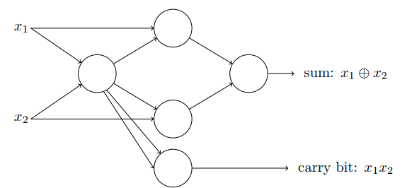
S型神经元
形式
网络中单个感知器上一个权重或偏置的微小改动有时会引起感知器的输出完全翻转，如从0变到1。因此我们引入一种S型神经元，它的作用和感知器类似，但是权重和偏置的微小改动只引起输出的微小变化。
注意S型神经元与感知器的区别在于，它的输入可以是0-1的任意值，输出也不是局限于0和1。（可以看做阶跃函数的平滑版本）
$$
\sigma(z)=\frac{1}{1+e^{-z}}
$$
其中
$$
z=\sum_jw_jx_j-b
$$
σ 的平滑意味着权重和偏置的微小变化，即 ∆wj 和 ∆b，会从神经元产⽣⼀个微小的输出变化 ∆output 。
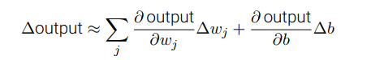
只有$z=w\cdot x+b$取中间值时，它的行为与感知器模型有较大的偏离；在z时一个很大的正数时，输出接近1，在z是一个很大的负数时，输出接近0。
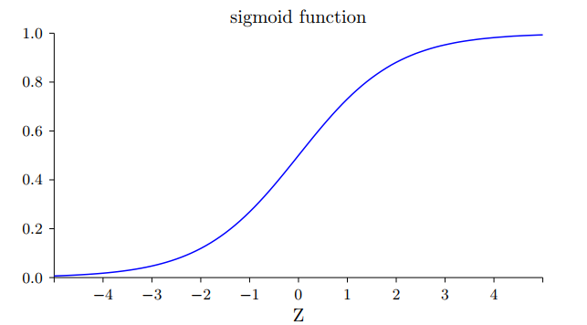
解释输出
约定任何大于等于0.5的输出等同于感知器的输出“1”；小于0.5的输出等同于感知器的输出“0”。
神经网络的架构
前馈神经网络：以上一层的输出作为下一层的输入，没有回路，信息总是向前传播。
递归神经网络：一个神经元的激活状态可以刺激其他神经元，使其随后被激活并保持一段有限时间。一个神经元的输出只在一段时间后而不是即刻影响它的输入，因此不会引起问题。
结构上分为三部分
- 输入层
- 隐藏层
- 输出层
例子
假设我们尝试确定⼀张⼿写数字的图像上是否写的是“9”。很⾃然地，我们可以将图⽚像素的强度进⾏编码作为输⼊神经元来设计⽹络。
如果图像是⼀个 64 × 64 的灰度图像，那么我们会需要 4096 = 64 × 64 个输⼊神经元，每个强度取 0 和 1 之间合适的值。输出层只需要包含⼀个神经元，当输出值⼩于 0:5 时表⽰“输⼊图像不是⼀个 9”，⼤于 0:5 的值表⽰“输⼊图像是⼀个9” 。
识别手写数字
我们将使⽤⼀个三层神经⽹络来识别单个数字 ，设定网络的输出层包含10个神经元，如果第⼀个神经元激活，即输出 ≈ 1，那么表明⽹络认为数字是⼀个 0。如果第⼆个神经元激活，就表明⽹络认为数字是⼀个 1 。
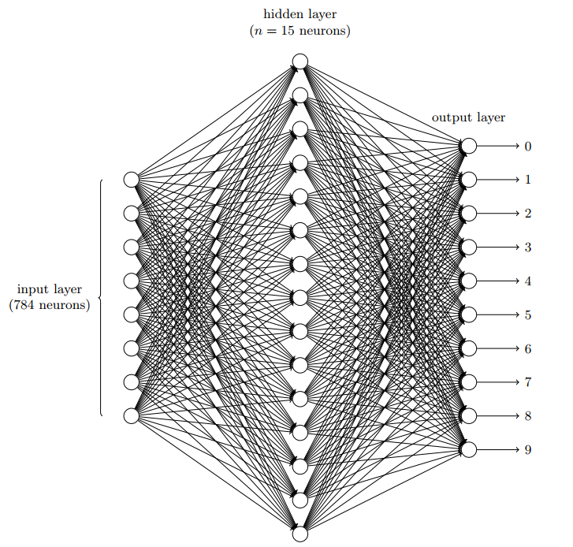
为什么使用10个输出神经元而不用4个？
如果我们有 4 个输出，那么第⼀个输出神经元将会尽⼒去判断数字的最⾼有效位是什么。把数字的最⾼有效位和数字的形状联系起来并不是⼀个简单的问题。
梯度下降法学习
对于MINIST数据集，把每个训练输⼊ x 看作⼀个 28 × 28 = 784维的向量。我们⽤ y = y(x) 表示对应的期望输出。
这里y是一个10维的向量。假如有一个特定的画成6的训练图像，那么$y(x)=(0,0,0,0,0,1,0,0,0,0)^T$则是网络的期望输出。注意这里T是转置操作，把一个行向量转换成一个列向量。
代价函数
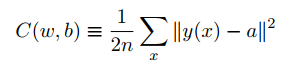
这⾥ w 表⽰所有的⽹络中权重的集合， b 是所有的偏置， n 是训练输⼊数据的个数， a 是表示当输⼊为 x 时输出的向量，求和则是在总的训练输⼊ x 上进⾏的。 符号 ∥v∥ 是指向量 v 的模。
我们把C称为二次代价函数，有时也称为均方误差或者MSE。我们将采用梯度下降算法来找到能让代价函数尽可能小的权重和偏置。
为什么使用代价函数
为什么不直接最大化正确分类的图像数量，而是去最小化一个类似二次代价的间接评量？这么做是因为在神经⽹络中，被正确分类的图像数量所关于权重和偏置的函数并不是⼀个平滑的函数。⼤多数情况下，对权重和偏置做出的微⼩变动完全不会影响被正确分类的图像的数量。这会导致我们很难去解决如何改变权重和偏置来取得改进的性能。⽽⽤⼀个类似⼆次代价的平滑代价函数则能更好地去解决如何⽤权重和偏置中的微⼩的改变来取得更好的效果。
梯度下降法
为了最小化$c(v)$，想象C是一个只有两个变量$v_1$和$v_2$的函数（其实就是w和b），于是我们的目的就是设计一个能最小化C的算法。
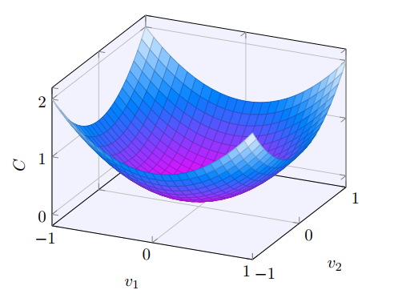
先让我们看一下，$v_1$和$v_2$变化一个微小的量后，C会怎么变化。根据微积分知识可得到：
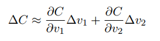
那么我们的目的就是怎么选取$\Delta v_1,\Delta v_2$使$\Delta C$为负。
我们使用一种简明的记法：
$$
\Delta v \equiv (\Delta v_1,\Delta v_2)^T
\\
\nabla C \equiv (\frac{\partial C}{\partial v_1},\frac{\partial C}{\partial v_2})^T
$$
其中，$\nabla C$称为梯度向量。
于是，$\Delta C$的表达式可写为
$$
\Delta C \approx \nabla C \cdot \Delta v
$$
这样子，为了达到我们使$\Delta C$为负的目的，我们选取
$$
\Delta v=-\eta \nabla C
$$
这里$\eta$是个很小的正数，称为学习速率。
那么有
$$
\Delta C \approx -\eta \nabla C \nabla C=-\eta ||\nabla C||^2
$$
也就是说，v的变化是
$$
v \implies v’=v-\eta \nabla C
$$
注意，关键是选择合适的$\eta$，使得$\Delta v$的变化不是太大或太小。
综上，梯度下降法可以被视为一种在C下降最快的方向上做微小变化的方法。假设我们正在改变$\Delta v$来让C尽可能小，这相当于最小化$\Delta C \approx \nabla C \cdot \Delta v$。我们首先限制步长为小的固定值，即||||